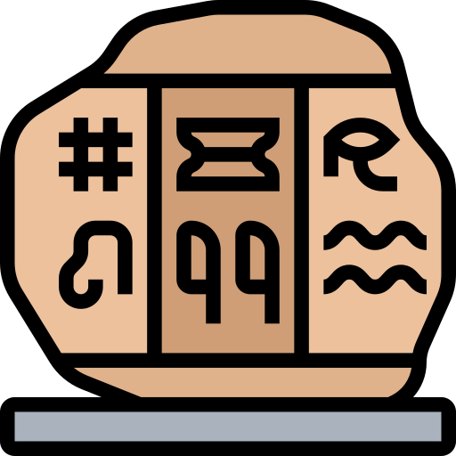
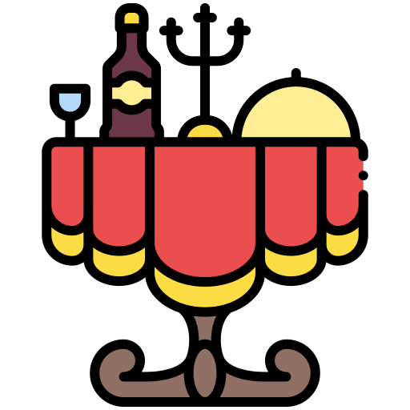

De ce să alegi Berlinul?

Istorie bogată
Descoperiți repere care povestesc istoria fascinantă a Berlinului.
Centru cultural
De la galerii de artă la festivaluri de muzică, Berlinul le are pe toate.

Bucătărie de clasă mondială
Bucurați-vă de arome tradiționale germane și delicii internaționale.